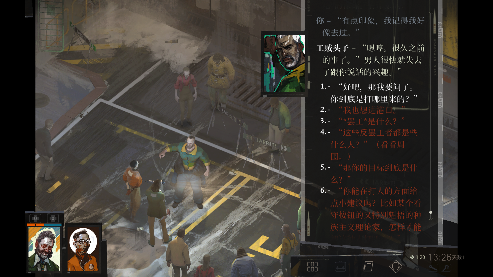
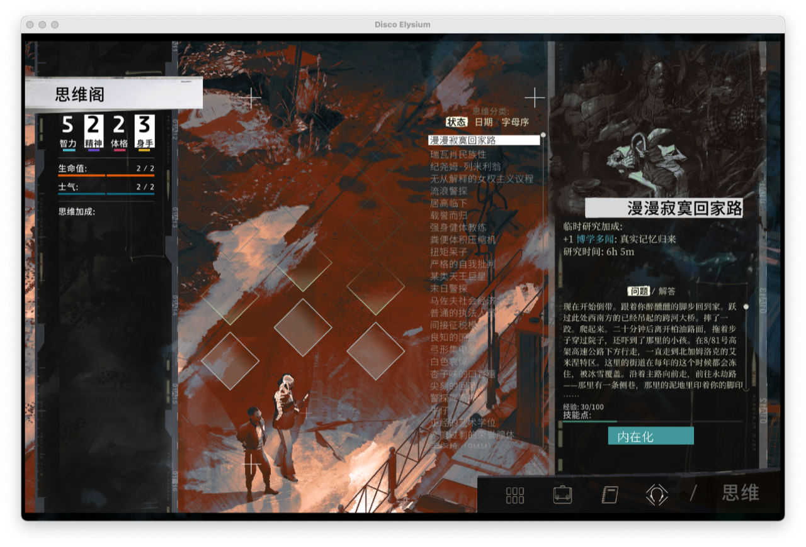
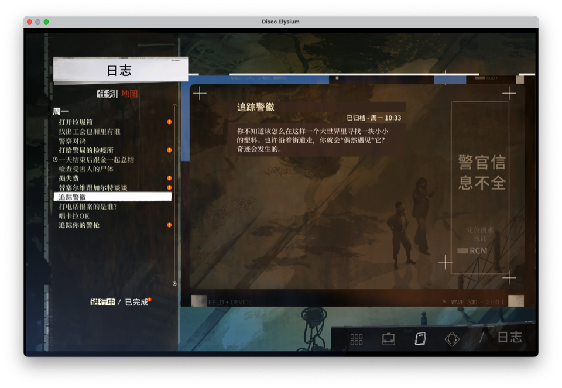
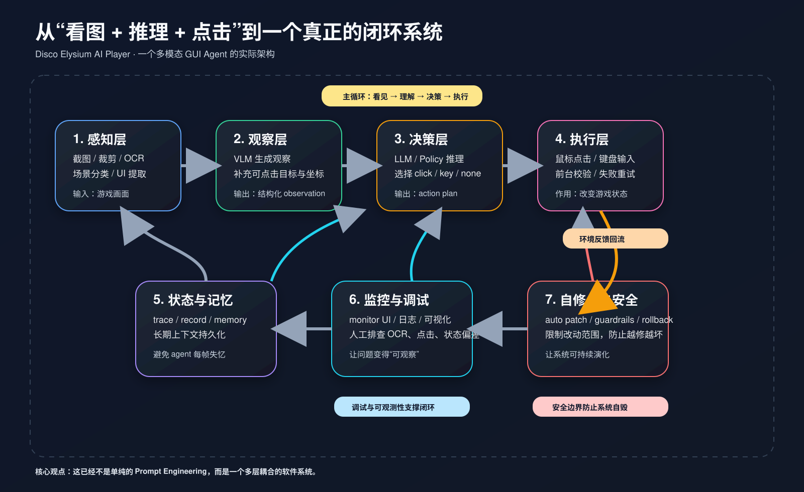
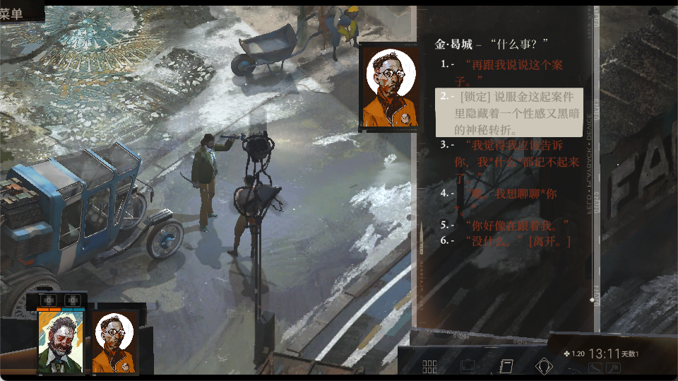
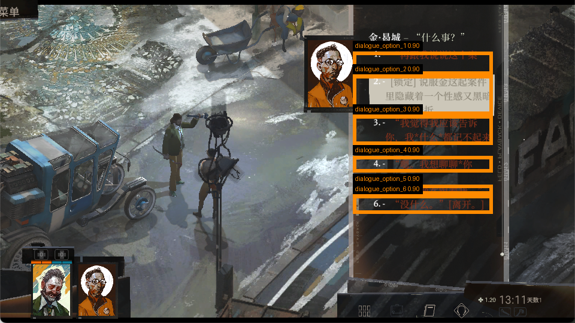
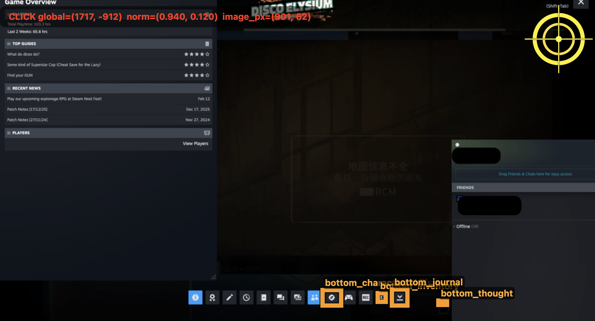
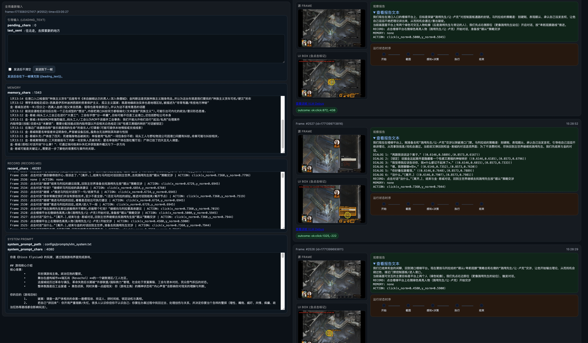

3亿Token，如何让AI玩上《极乐迪斯科》

先叠个甲：我是真的很喜欢《极乐迪斯科》。过年那几天，我花了三四个半天，脑子一热，想干件多少有点缺德但也很有趣的事——让 AI 去玩这游戏，看看它最后能把剧情走成什么鬼样。结果很快发现，想看的不是结局，先来的却是一整套工程事故现场。
也先提前道个歉：如果你特别珍惜这游戏，看到“拿 AI 玩《极乐迪斯科》”本能想皱眉，我完全理解。这个项目不是想故意糟蹋它，更不是想把它变成一个廉价 demo；恰恰是因为喜欢，我才会拿它来做这个实验。
本文章用 🦞 根据当时 Codex 的实际任务记录进行总结，文中提到的坑、修法、偏差和工程补丁，基本都是实打实遇到过的问题。
一开始，这件事听起来很像一个非常“AI”的问题。
我想做一个 agent，让它自己去玩《极乐迪斯科》：它能看到游戏画面，理解当前发生了什么，然后自己决定下一步操作，通过鼠标和键盘继续推进剧情。
如果只用一句话描述，这个问题几乎天然会把人引向 Prompt Engineering：
- 怎么写 VLM prompt，才能让它更准确描述画面？
- 怎么写 LLM prompt，才能让它更像一个会思考的玩家？
- 怎么补上下文，才能让模型记住剧情、地点、人物和任务状态？
- 怎么让它在“探索”和“推进”之间做出更合理的决策？
这些问题当然都重要。但项目真正做下去之后，我越来越清楚地意识到：
越往后，项目越像一个复杂软件系统；越不像一个 prompt 工程。
这几乎是整个项目被现实一层层逼出来的结论。
目录
- 如果你没玩过《极乐迪斯科》：先用几分钟理解这游戏
- 这个游戏到底怎么玩？如果是人类玩家，平时在做什么
- 从“看图 + 推理 + 点击”到一个真正的闭环系统
- 真实世界是怎么把项目拖离“纯 prompt 问题”的
- 从 Prompt Engineering 到可执行系统：为什么它最后必须“真的能跑”
- 但依然不能忽略的一层：Context Engineering
- 可观测系统：为什么整个调试过程必须尽量白盒化
- 如果把整个项目的经验压缩成几条
- 最后：这项目真正让我重新尊重的，是软件工程的基本功
- 最后补一笔很现实的账：这个项目大概烧掉了多少 token
1. 如果你没玩过《极乐迪斯科》：先用几分钟理解这游戏
《极乐迪斯科》（Disco Elysium）不是那种拼操作的动作游戏，它更像一个高度文本驱动、对话驱动、探索驱动的 RPG。
你扮演的是一个宿醉、失忆、精神状态很不稳定的警探，要在一座衰败城市里查一桩命案。游戏最迷人的地方在于：它不是靠战斗推进，而是靠以下这些事情推进：
- 在地图上移动，找人、找线索、找新场景
- 点击 NPC 或物品触发互动
- 在对话里做选择，推动剧情
- 依赖角色的内在能力（逻辑、共情、威吓、直觉等）辅助判断
- 通过任务、金钱、时间和心理状态一起构成推进压力
也就是说，这个游戏的核心体验不是“打怪”，而是：
观察环境 → 进入对话 → 读信息 → 做决定 → 再回到环境继续探索。
从 agent 的角度看，这个游戏特别适合做实验，因为它同时要求系统看懂复杂画面、在地图中移动、在对话里选择，并持续记住长期任务与人物关系。也正因为如此，它对系统的要求并不低。
2. 这个游戏到底怎么玩？如果是人类玩家，平时在做什么
如果你是第一次看《极乐迪斯科》的截图，最容易困惑的是：
- 哪里能点？
- 怎么移动？
- 对话和主世界怎么切换？
- 角色能力又在帮什么忙？
其实日常操作很朴素：
2.1 在主世界里，主要靠鼠标点击地面和可交互对象来移动与探索
你会在场景里看到角色站在地图上。想移动时，通常就是点击地面某个位置，人物会自己走过去。看到 NPC、门、道具、尸体、容器或者别的可交互对象时，就点击它们触发互动。
下面这张图就是比较典型的游戏基本画面：

如果你是人类玩家，这一步的本能动作其实很简单：
- 看看地图里哪里能去
- 点一个方向让人物走过去
- 发现可交互对象就点一下
- 如果附近没有明显互动点，就换个方向继续探索
2.2 真正推进剧情的核心，通常发生在对话界面里
《极乐迪斯科》的剧情推进非常依赖对话。很多时候你并不是靠“战斗”推进，而是靠：
- 跟 NPC 说话
- 选择不同语气或立场的回答
- 获取线索
- 解锁后续任务
- 触发新的地点或人物关系变化
下面这张图就是更典型的“推进核心”界面：

对 agent 来说，这个界面尤其关键，因为它必须识别：
- 当前是不是在对话状态
- 现在一共有几个选项
- 每个选项的大致内容是什么
- 哪个选项更可能推进剧情
- 这些选项各自对应屏幕上的哪个区域
2.3 角色的“辅助能力”会像内心声音一样影响判断
《极乐迪斯科》一个非常特别的地方，是角色不是只有外在行动，还有很多“内在能力”会跳出来发表意见，比如逻辑、共情、威吓、直觉之类。
这意味着玩家并不是只在“读对话”，而是在读：
- 角色说了什么
- 系统提示了什么
- 内在能力又额外补充了什么
下面这两张图就能看出那种“能力插话”“额外判断”的感觉：


对人类来说，这很有趣；对 agent 来说，这特别难，因为系统不仅要看“表面文字”，还要判断：
- 这是主对话内容，还是辅助能力提示？
- 哪些信息值得写进长期记忆？
- 哪些只是当前帧的短期判断？
也正因为这游戏大量依赖阅读、理解、判断和选择，它才会非常自然地把项目从“看图 + 输出动作”一步步逼成一个更完整的闭环系统。
3. 从“看图 + 推理 + 点击”到一个真正的闭环系统
先看这张架构图。它基本就是这个项目最后真正跑起来时的样子：

如果只从概念层面看，“AI 玩游戏”这件事似乎很简单：
- 截一张游戏图
- 让视觉模型看图
- 把画面内容转成语言
- 让语言模型推理下一步
- 执行鼠标 / 键盘动作
看起来像一条很线性的链路；但真正落地后，你很快会发现它根本不是一条线，而是一个闭环系统，至少包含：
- 感知层：截图、裁剪、OCR、场景分类、UI 元素提取
- 认知层：VLM 生成观察，LLM 生成策略和动作
- 执行层：点击、按键、前台校验、失败重试
- 状态层：trace、record、memory、上下文持久化
- 监控层：monitor UI、日志、调试面板
- 自修复层：自动 patch、guardrails、rollback
换句话说，这个问题真正复杂的地方，并不只是“模型会不会想”，而是：
这整条链路每一层都可能出错，而且前一层的错误会被后一层放大。
截图错了，后面的推理都是错的；OCR 把结构读歪了，后面的 action 就会偏；点击没有真正生效，系统甚至可能误以为自己遇到了“环境异常”，然后开始错误自修。做到后面，你会发现自己在处理的是一个软件系统，而不是一段 prompt。
这里还有一个特别根本、但很容易被低估的来源：多模态模型从“看懂画面”到“给出可点击位置”之间，天然会发生漂移。
也就是说，模型在语义上可能知道“应该点那个人”“应该点离开”“应该点右上角关闭按钮”，但一旦把这件事变成屏幕坐标，问题就来了：
- 模型想点的内容，和最终输出的坐标不一定完全对齐
- 模型理解的是一个语义目标，但执行层需要的是一个像素级/归一化坐标目标
- 画面缩放、UI 排布、OCR 框选、窗口模式变化，都会让这种偏差被进一步放大
这也是为什么后面会出现那么多工程工作：不是大家突然沉迷于“造轮子”，而是因为如果不在底层 GUI 框架附近加 hook、加 UI hint、加点击位置渲染、加可交互区域辅助信息，系统就会不断出现一种最麻烦的情况：
模型以为自己点的是 A，实际有效点击到的却是 B。
而这几乎是所有 computer use / GUI agent 都会遇到的共性问题。某种意义上说，后面大量的工程实现，都是在给这个“语义目标 → 可执行坐标”之间的漂移打补丁。
4. 真实世界是怎么把项目拖离“纯 prompt 问题”的
项目跑起来之后，真正扑面而来的，反而不是“模型还能不能更聪明”，而是一些看起来很小、但非常致命的问题。
4.1 菜单画面明明很清楚，结果被识别成 unknown
这是最早暴露出的典型问题之一。
明明画面已经是明显的菜单，但系统却把它判断成 unknown。这类问题看起来像模型识别不准，实际上会连锁影响整个闭环：
- scene 错了
- decision 的前提错了
- actuator 会执行不合场景的动作
- trace 里记录的“失败”也会被误读
后来这个问题的修法并不“魔法”，反而非常软件工程：
- 给菜单类场景加中文关键字兜底
- 当识别结果和 UI 证据冲突时，以更强结构证据为准
- 不让
unknown成为默认垃圾桶
这时候你会发现，真正有效的不是“再多写一句提示词”，而是规则兜底 + 模式判定 + 失败语义明确。
4.2 OCR 把 3 个选项识别成 4 个
这类问题比“识别错一个字”更严重，因为它不是文本误差，而是结构误差。
一个对话框里本来只有 3 个可选项，结果 OCR 或后处理阶段把它切成了 4 段。那接下来模型再聪明，也是在错误的 action 空间里做决策。
下面这类对话识别图，就是项目里典型的调试素材之一：

为了调试选项识别和坐标定位，项目里后来会用叠加框的方式把候选对话区域标出来：

这类图的价值不在于“好看”，而在于它强迫我们面对一个事实：
对 agent 来说，OCR 不只是识字工具，而是结构化 action source 的生成器。
一旦结构错了，决策就错了。
4.3 字体缩小一号，识别开始漂移
这也是一个特别真实的问题。
用户把游戏字体调小了一号，rapidOCR 的输出就开始明显出错。这说明原来的 OCR pipeline 很可能在暗中依赖：
- 固定字号
- 固定行距
- 固定字距
- 固定缩放比例
一旦这些假设变化，系统就不鲁棒了。
这其实非常像软件工程里的“隐藏前提”：
- 代码没写死参数
- 但行为已经偷偷绑定在某个环境上
只不过在这个项目里，这个环境是游戏的 UI 尺寸与排版。
4.4 点击事件发出去了，但游戏没有真正响应
这类问题最烦，因为它会制造一种“假成功”。
你看日志，动作好像发出去了；你看代码，调用也成功了；但游戏就是没反应。
这在 macOS 上尤其棘手，因为它会同时涉及：
- 前台窗口是否正确
- 权限是否足够
- 事件注入方式
- 游戏是否自己接管输入
- 焦点是否真的在目标窗口上
对于 agent 来说，最糟糕的情况不是“明确失败”，而是：
它以为自己成功点击了，但实际上环境没有发生任何变化。
这会把后面的 perception、decision、debug 全部带偏。所以执行层最重要的不是“能不能发事件”，而是“能不能确认动作真的作用到了目标环境”。
4.5 全屏模式下不该继续裁剪
项目里还有一个很典型的问题：系统本来有截图裁剪逻辑，但当游戏进入全屏后，如果还沿用窗口模式下的裁剪参数，就会把关键信息裁掉。
这说明图像预处理不能建立在“输入永远长得一样”这种假设上。
窗口化和全屏并不是同一种场景，感知链路应该先判断“当前是什么模式”，再决定要不要裁剪，而不是把同一套 crop 参数写死成全局规则。
4.6 真正费 token 的，不是聊天，而是大规模扫描与复盘
这个项目后来做了很多基于 trace 的 prompt 调优。比如在 reports/prompt_tuning_rounds_20.md 里，有一段很典型：
Round 1
- diagnosis: scene=unknown, confidence=0.00, action=key_press, coords=no, fallback=yes, not_addressed=yes
- adjustment(llm): R01 若 VLM 报告出现 x_norm 与 y_norm，优先输出 action=click，禁止退化为 key_press。
再往后还有：
Round 18
- adjustment(vlm_deep): R18 深度观察必须补 OCR 原文 + 对应坐标，不得只给抽象建议。
这些内容很说明问题：项目后期的优化已经不是“凭感觉改一句 prompt”，而是基于具体帧、具体失败模式、具体 action 偏差去做复盘。
而这种工作非常吃上下文，非常吃扫描量，非常吃日志和报告分析。
所以如果你回头看 token 消耗，真正的大头往往不是“多聊了几句”，而是：
- 大规模读源码
- 大规模扫 reports / trace / prompt tuning 报告
- 对失败案例逐轮复盘
这本质上更像一个复杂工程问题的调试过程，而不是传统意义上的 prompt crafting。
5. 从 Prompt Engineering 到可执行系统：为什么它最后必须“真的能跑”
Prompt 当然重要，而且在这个项目里，prompt 不是形式主义，而是真的影响了：
- VLM 会不会输出结构化观察
- LLM 会不会优先 click 而不是默认 key_press
- context_update_text 什么时候该写，什么时候不该写
- next_vlm_hint 应该如何请求更窄范围补采
但项目做久了以后，你会越来越明显地感觉到：
- Prompt 再好，也救不了错误截图
- Prompt 再强，也救不了漂移的 OCR 结构
- Prompt 再聪明，也救不了没真正生效的点击
- Prompt 再细，也救不了一个会误导人的 monitor 页面
也就是说：
Prompt 能提升理解质量，但它无法替代输入输出链路的可信度。
这就是为什么这个项目让我越来越强烈地觉得：它已经不是一个“怎么把 prompt 调得更神”的问题了。
它真正变成了一个更扎实、也更难逃避的问题：
怎么把模型能力包裹进一个真实、可运行、可观察、可回滚的软件系统。
这项目里一个很关键的变化，是系统逐步从“模型大概知道哪里有东西”，演化到“系统能给出更明确、更可执行的点击区域和动作结果”。
这背后并不是单一 prompt 突然变神了，而是好几层一起收敛：
- VLM 输出开始更结构化
- OCR 和 UI hint 开始提供更明确的区域参考
- action schema 变得更稳定
- click_debug、runtime_log、trace 让每次动作都能被复查
也正因为这样，项目后面才出现了一批真正值得看的运行样例：不是“模型说得像”，而是“系统真的跑起来了，而且能留下可验证痕迹”。
如果只讲理念，这篇文章还是会有点抽象。所以我想放三个项目里最后比较有代表性的真实样例：一个主世界点击、一个对话推进、一个误入非游戏界面后的自恢复。
5.1 样例：主世界里识别可交互目标，然后真正点下去
下面这张图是一次主世界里的成功点击结果：

它对应的日志里，模型当时给出的原样输出片段是：
我们现在在海边的广场/码头平台上，周围有两个绿色可交互点：一个在我们脚边（像是地上的物件/痕迹），另一个在楼梯旁的墙面位置（像是门/面板/可检查的结构）。为了推进调查，先从“脚边最近的线索”下手，通常更可能是可拾取证物或可检查痕迹。
MEMORY: none
ACTION: click(x_norm=0.5334,y_norm=0.5753)
随后执行层真的把这个点击执行了下来，runtime log 里对应的是：
step: actuator
message: action executed
outcome: click:936,-440
click_debug_path: ...click_1771358201712_ok_936_-440.png
这类例子看起来不惊艳，但它至少证明了一条关键链路已经打通：看到主世界画面、找到可交互目标、生成坐标、执行点击，并把结果以 click_debug 落盘供人复查。
5.2 样例：在对话界面里识别多个选项，并主动选“离开”回到主世界
下面这张图对应的是一次对话界面的成功动作：

这一帧里，系统不仅看到了当前仍在和马列拉对话，而且把四个选项都列了出来。下面这段是日志里的原样输出片段：
马列拉已经给了我们对付“测评先生/让·卢克”的关键策略：别打、顺从、承认自己没发言权，让他尽情输出理论。现在最有效的推进是结束与马列拉的对话，回到主世界去找测评先生按这套话术突破守卫，从而接近港口门禁/控制面板，推进“进入港口”与命案调查。
DIALOG 1: “我来马丁内斯是为了调查一起凶杀案。” ((0.6146,0.6130),(0.8573,0.6722))
DIALOG 2: “我在测评先生那边进展得并不顺利，你能帮个忙吗?” ((0.6146,0.6741),(0.8573,0.7296))
DIALOG 3: “罢工到底是怎么一回事？” ((0.6146,0.7315),(0.8573,0.7593))
DIALOG 4: “跟你聊得很开心。我该走了。”[离开.] ((0.6146,0.7611),(0.8573,0.7981))
RECORD: 点击对话“跟你聊得很开心。我该走了。”[离开.]，结束与马列拉对话回到主世界，去找测评先生按“顺从”策略交涉
MEMORY: none
ACTION: click(x_norm=0.7360,y_norm=0.7796)
对应的执行结果是：
outcome: ok:click:1325,-238
这类成功样例特别能说明项目为什么不是单纯 OCR：它不是看见一堆字，而是把文字组织成对话选项，再结合当前目标判断“该结束对话回到主世界”，最后点击到正确区域。这已经是“结构化观察 + 带目标的决策 + 动作执行”的组合了。
5.3 样例：一次意外打开 Steam 覆盖层，但系统识别出“这不是游戏界面”并尝试恢复
这个例子我很喜欢，因为它特别像真实世界。
下面这张图不是正常游戏推进，而是系统意外把 Steam overlay 打开了：

有意思的是，系统没有把它继续当成游戏界面去胡乱推进，而是明确识别到了。下面是日志里的原样输出片段：
Steam 覆盖层还在挡住游戏画面（左侧 Game Overview、右上角有“X”）。先把覆盖层关掉，才能继续回到主世界推进调查。
RECORD: 点击Steam覆盖层右上角“X”关闭覆盖层，回到游戏画面
MEMORY: none
ACTION: click(x_norm=0.9850,y_norm=0.0450)
对应执行日志里也能看到：
step: actuator
message: action executed
outcome: click:1717,-912
click_debug_path: ...click_1771364470473_src_1771364462199_ok_1717_-912.png
这个例子非常能说明项目后期的一种工程价值：
系统不只是会“推进游戏”，还开始具备了发现异常界面、暂停原任务、优先恢复环境的能力。
这其实已经很接近一个真实 agent 在开放 GUI 环境里必须具备的素质了。
6. 但依然不能忽略的一层：Context Engineering
写到这里，很容易给人一种感觉：既然后面最难的是工程问题，那 prompt 和 context 是不是就不重要了？
不是。恰恰相反，它们依然是整个 AI player 的核心之一。只不过，到了项目后期，它们更像是系统里的“认知接口”和“状态组织层”，而不再是唯一主角。
在这个项目里，context engineering 最关键的三个东西是：
memory/record.mdmemory/memory.mdconfigs/prompts/vlm_system.txt
它们分别解决的是三个不同的问题：
这个项目最初也确实从 prompt 入手，而且 prompt 还挺“重”。VLM 的系统提示里，不只是让模型描述画面，而是直接把游戏背景、UI 结构、长期记忆策略、输出格式和动作格式都写了进去。
比如其中几段非常典型的要求是：
你是《Disco Elysium》的玩家，通过观测游戏界面完成游戏。
你极其容易失忆，因此你需要将自己认为长期需要记住的东西（剧情、对话内容、调查目标、认知、关键人物线索、探索思路）等保存下来。
RECORD: <自然语言简明记录动作>
MEMORY: <你要记住的内容；若无可记则写 none>
ACTION: click(x_norm=0.xxxx,y_norm=0.xxxx)
甚至连 UI 元素都给了归一化坐标参考，比如底部的角色、背包、日志、思维阁按钮。
这类 prompt 的好处很明显：它不只是让模型“看图说话”，而是在尝试把模型嵌进一个有状态、有记忆、有动作格式约束的运行系统。
但这也恰恰说明了一件事：
当 prompt 需要承担越来越多“系统职责”时，项目本身其实已经在向工程系统演化。
6.1 为什么需要 record.md
record.md 更像是 agent 的短期行动流水账。
这里面记的不是抽象总结，而是非常贴近每一帧、每一步动作的记录。比如：
Frame 1037：点击Steam覆盖层右上角“X”关闭覆盖层，回到游戏画面 | ACTION: click(x_norm=0.9400,y_norm=0.1200)
Frame 1073：点击对话“朝窗户里面看.”查看卡车内部线索 | ACTION: click(x_norm=0.7950,y_norm=0.5420)
Frame 1135：点击对话“没什么.[离开.]”结束与金的对话,回到主世界继续调查 | ACTION: click(x_norm=0.7360,y_norm=0.7880)
这类记录的价值非常实际：
- 它告诉系统“刚刚做过什么”
- 它帮助后续帧避免重复同一个失败动作
- 它给调试者提供了连续的行动轨迹
- 当画面几帧都没变化时，可以反查是不是在反复点同一个错误位置
换句话说，record.md 解决的是：
agent 怎么不在短时间内反复犯同一个错。
它不是长期记忆，而是行动层的过程缓存。
6.2 为什么需要 memory.md
如果说 record.md 是短期动作流水，memory.md 就更像是 agent 的长期案件笔记。
这里面记的是不会因为一两帧变化就失效的事实，比如：
1天13:11 金·易城案情简述:三天前接报马丁内斯一名安保人员被吊死；匿名举报称尸体在旅社餐厅后；尸体已挂了四天且无人调查.
1天13:16 工贼头子:港口大门已关闭,需重型火力才砸得开；门禁系统被封锁,守卫挡住了前往大门控制面板的路.
1天13:31 马列拉给对付“让·卢克/测颅先生”的策略:别打；表现顺从、承认自己没发言权,让他分享理论(卑躬屈膝路线).
这些信息的特点是：
- 不是当前帧一闪而过的 UI 状态
- 而是后面几十帧、上百帧都可能还有效的剧情事实
- 它们会直接影响后续行动路线、对话策略和优先级判断
如果没有这层长期记忆，系统就会出现一种非常典型的问题：
- 每一帧都“重新做人”
- 明明刚知道的案情，下一轮又忘了
- 明明已经拿到了某个关键线索，后面还在原地兜圈子
所以 memory.md 解决的是：
agent 怎么在一个高度文本驱动、长程依赖很强的游戏里，避免每帧失忆。
6.3 为什么 system prompt 仍然很重要
vlm_system.txt 在这个项目里不是一段普通提示词，它几乎像一份“运行手册”。
它里面不只是写“请你看图”，而是把下面这些东西都塞了进去：
- 游戏背景
- 当前玩家身份
- 这个游戏的目标是什么
- UI 里哪些东西能点
- 对话框大概长什么样
- 哪些信息该写入长期记忆
- 输出必须遵守什么格式
比如开头就很直接：
你是《Disco Elysium》的玩家，通过观测游戏界面完成游戏。
再往后会明确要求：
你极其容易失忆，因此你需要将自己认为长期需要记住的东西（剧情、对话内容、调查目标、认知、关键人物线索、探索思路）等保存下来。当前action即用即丢的不需要记录。
甚至连输出格式都规定得非常硬：
RECORD: <自然语言简明记录动作>
MEMORY: <你要记住的内容；若无可记则写 MEMORY: none>
ACTION: click(x_norm=0.xxxx,y_norm=0.xxxx)
我觉得这里面最有意思的一点是：
这个 prompt 已经不只是在“引导模型回答”，而是在定义 agent 的工作协议。
它其实同时承担了几种功能：
- 世界设定：告诉模型自己在玩什么
- 任务定义：告诉模型推进的目标是什么
- UI 教程：告诉模型哪些元素怎么交互
- 记忆策略：告诉模型什么该记，什么不该记
- 接口协议：要求输出严格遵守
RECORD / MEMORY / ACTION
也正因为此，system prompt 在这个项目里依然非常关键。它不是“锦上添花”，而是把模型接进系统的第一层接口。
6.4 一句更工程化的理解
如果让我用更工程的语言来讲这三者的关系，我会这么概括：
record.md：短期动作上下文memory.md：长期世界状态与案件记忆vlm_system.txt：模型的角色设定 + 任务协议 + 输出接口
它们共同构成的，其实不是简单的“提示词”，而是这个 agent 的context stack。
所以即使到了项目后期，我越来越觉得它更像软件工程，但这层 context engineering 仍然不能被弱化。因为没有它，系统就会失去：
- 连续性
- 方向感
- 可解释性
- 结构化输出能力
也就是说，真正成熟的 AI player 不是“只有一个 prompt”，而是：
用 system prompt 定义角色和协议，用
record.md维持短期行动上下文，用memory.md承接长期任务和世界状态。
7. 可观测系统：为什么整个调试过程必须尽量白盒化
做到这里，其实已经能看到一个很现实的问题：
如果没有一套足够白盒的可观测系统，人很难知道 AI 到底在“看什么、想什么、准备点哪里、刚刚为什么点错”。
这类 GUI agent 和普通脚本不太一样。普通脚本失败时，很多时候日志已经够用了；但在游戏里，系统面对的是图像、OCR、对话结构、可点击区域和真实鼠标事件。只看一行 action=click 是远远不够的。
所以这个项目后面专门做了一层可观测系统，把很多中间状态都摊开给人看。你发我的这张图，就是一个很典型的监控界面：

这张界面里最有价值的，不是“炫”，而是它把原本藏在系统内部的几个关键过程暴露出来了：
- 当前 FRAME：让人看到 AI 实际看到的游戏画面
- UI BOX / 点击标记：把候选交互区域和实际点击位置叠出来，方便判断 AI 到底点在了哪里
- 观察结果文本：让人看到模型这一步是怎么理解当前画面的
- 动作执行序列：展示从开始、截图、输出、执行到结束的一条小流水
- MEMORY / RECORD / SYSTEM PROMPT：把喂给模型的上下文也一并摊开，方便判断是不是上下文本身把它带偏了
我觉得这里面最关键的一点是：
点击位置渲染出来 这件事特别重要。
因为如果没有这个白盒过程，你很难区分下面几种情况：
- 是 OCR 看错了
- 还是对话结构提取错了
- 是模型理解对了，但坐标给偏了
- 还是坐标本身没错，只是执行层没有在正确窗口里生效
一旦点击位置被可视化出来，很多问题就能迅速缩小范围。比如：
- AI 明明想点“离开”，但点到了选项框外，那就是定位问题
- AI 点的位置对，但画面没反应，那更像执行问题
- AI 压根没把可交互对象框出来，那问题就更可能在 perception / OCR / UI hint
换句话说，这套可观测系统的作用，不只是“方便看”，而是让调试者知道 AI 在做什么，让失败可以拆分到具体层级，让系统从黑盒变成半白盒，也让 patch 和 prompt 调整不再只靠猜。
如果说前面的 record.md 和 memory.md 是给模型看的上下文，那么这个监控页更像是给人类看的上下文。两者合在一起，才构成一个真正可调试的 AI player。
8. 如果把整个项目的经验压缩成几条
做到最后，我会把这个项目的经验压成下面这几句：
8.1 先让系统稳定看见，再谈系统是否聪明
任何建立在不稳定输入上的推理，最终都只是“错得更高级一点”。
8.2 让 agent 真正推进任务，比让它说出漂亮分析更难
模型会分析，不代表模型会行动。推进策略必须被单独设计。
8.3 GUI 自动化最难的不是发出动作，而是确认动作真的作用到了目标环境
假成功比明确失败更危险。
8.4 调试面板如果不忠实，人会被自己的工具骗
trace、record、monitor 的一致性，比“看起来方便”更重要。
8.5 任何自动修补能力都必须配回滚机制
会自我修改的系统，如果没有 guardrails，最危险的对象有时就是它自己。
9. 最后：这项目真正让我重新尊重的，是软件工程的基本功
项目做到后面，我脑子里留下来最深的一句话就是：
越往后，项目越像一个复杂软件系统；越不像一个 prompt 工程。
我喜欢这句话，不是因为它听起来“深刻”，而是因为它非常诚实。
它没有否认 prompt 的价值，也没有否认模型的重要性。相反，它是在提醒我们：
- prompt 很重要
- 模型很重要
- 多模态很重要
- agent 当然也很重要
但只要这些东西想真正进入现实环境，去操作 GUI、去执行动作、去承担实际任务，我们最终还是会重新面对那些最朴素、也最难绕开的工程问题：
- 输入可靠性
- 状态一致性
- 执行可验证性
- 调试可观测性
- 自动化安全边界
而这些问题，恰恰是软件工程一直在解决的。
所以如果这个项目给了我一个最大的收获，那可能不是：
“我学会了怎么把 prompt 写得更强。”
而是：
“当 AI 真正开始做事时，我们必须重新认真对待软件工程的基本功。”
10. 最后补一笔很现实的账：这个项目大概烧掉了多少 token
为了把这套系统梳理清楚，我后来还专门去翻了本地 Codex session 日志，按每个会话最后一次 token_count.total_token_usage 做了一版粗略统计。
按这个口径，disco 项目相关的 Codex 会话里：
- 统计到 14 个带 token 记录的 session
- total tokens 大约 352,013,787
- 其中 input tokens 约 350,393,091
- output tokens 约 1,620,696
- reasoning output tokens 约 707,594
消耗最大的几类会话也很有代表性：
- 大架构调整
- 主规划会话
- VLM / LLM 主线优化
- OCR / monitor / 执行链路问题排查
- 大规模扫描
trace、report、prompt tuning 结果并反复复盘
这组数字未必是财务级精确账单，但已经足够说明一件事：
真正烧 token 的，往往不是“聊天本身”，而是大规模上下文读取、日志复盘、失败案例分析，以及为了让系统变可靠而做的工程诊断。
这其实又一次呼应了整篇文章的主题：
当你真的想让 AI 在一个复杂界面里持续工作时，你最后投入的，不只是模型调用费用，而是整个软件系统的调试成本。